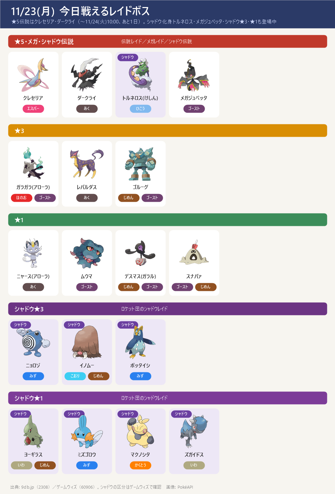
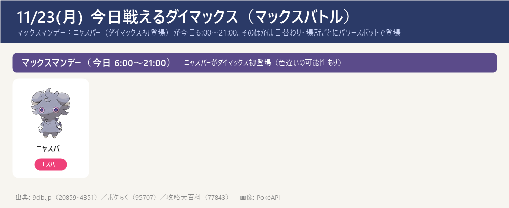
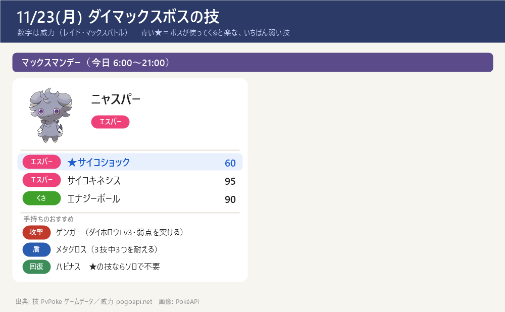
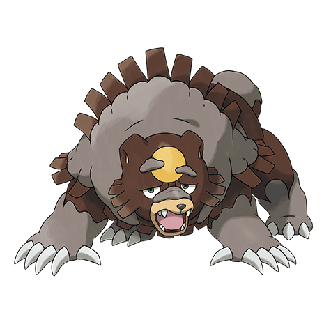

今日のポイント
- ★5伝説レイド：
 クレセリア・
クレセリア・ ダークライ（6:00〜〈9dbは5:00〉・〜11/24(火)10:00、残りあと1日）。クレセリア（エスパー）→ ゴースト・あく・むし技、ダークライ（あく）→ フェアリー・かくとう・むし技が有効。どちらも色違いあり。明日の朝で終わるので捕り逃しに注意。シャドウ化身
ダークライ（6:00〜〈9dbは5:00〉・〜11/24(火)10:00、残りあと1日）。クレセリア（エスパー）→ ゴースト・あく・むし技、ダークライ（あく）→ フェアリー・かくとう・むし技が有効。どちらも色違いあり。明日の朝で終わるので捕り逃しに注意。シャドウ化身 トルネロス（〜12/1）・
トルネロス（〜12/1）・ メガジュペッタ（〜11/24(火)10:00）も継続
メガジュペッタ（〜11/24(火)10:00）も継続 - マックスマンデー：
 ニャスパー（ダイマックス初登場・色違いの可能性あり）が今日6:00〜21:00。「大きな足跡」は今日11/23(月)20:00で終了。通常のマックスバトル（★1〜★3）はパワースポットで日替わり・場所ごとに登場します（ゲーム内で確認を）
ニャスパー（ダイマックス初登場・色違いの可能性あり）が今日6:00〜21:00。「大きな足跡」は今日11/23(月)20:00で終了。通常のマックスバトル（★1〜★3）はパワースポットで日替わり・場所ごとに登場します（ゲーム内で確認を） - 今日は勤労感謝の日。時間限定イベントはマックスマンデーだけです。この先は 11/24(火) にクレセリア・ダークライ・メガジュペッタが終了＆新イベント「黄昏時の願い」開始（〜11/30(月)20:00）、11/25(水) に
 デオキシス各フォルムのレイド＆レイドアワー（18:00〜19:00）とメガメタグロス登場、11/26(木) にスポットライトアワー：
デオキシス各フォルムのレイド＆レイドアワー（18:00〜19:00）とメガメタグロス登場、11/26(木) にスポットライトアワー： オンバットが控えています
オンバットが控えています
今日戦えるレイドボス
★5伝説はクレセリア・ダークライ（〜11/24(火)10:00、あと1日）。シャドウ化身トルネロス・メガジュペッタ・シャドウ★3・★1も登場中

今日戦えるダイマックス（マックスバトル）
マックスマンデー：ニャスパー（ダイマックス初登場）が今日6:00〜21:00。そのほかは日替わり・場所ごとにパワースポットで登場
- マックスマンデーは今日 6:00〜21:00、ニャスパーがダイマックス初登場です（色違いの可能性あり）。「大きな足跡」は今日 11/23(月)20:00 で終了します
- 通常のマックスバトル（★1〜★3）はパワースポットで日替わり・場所ごとに登場します。両サイト共通で挙がっていたのは ワンリキー・イーブイ・ツボツボ・ニューラ・ホエルコ・ヒンバス・ダルマッカ（ランク表記はサイトで違い）。戦えるボスはゲーム内のパワースポットで確認してください
- 11/30(月)のマックスマンデーはフリージオの予定です（攻略大百科 77843）
- 【各ボスのスペシャルアタック候補】（下のカード。数字はレイド・マックスバトルでの威力。★＝ボスが使ってくると楽な、いちばん弱い技（ボスと同じタイプの技は1.2倍で計算。こちらのポケモンとの相性は見ていない）。戦闘中に技名が出たら受け役を合わせる）


サカキ対策（シャドウゼクロム）：攻略ページへ（別ページ）
締め切り・やること：まとめページへ（別ページ）
この先の予定（タップで開閉）
- 11/23(月) マックスマンデー：ニャスパー（6:00〜21:00・ダイマックス初登場）／「大きな足跡」20:00 終了
- 11/24(火) 10:00 クレセリア・ダークライ・メガジュペッタのレイド終了／新イベント「黄昏時の願い」開始（〜11/30(月)20:00）／夜は満月（

ガチグマに進化可能） - 11/25(水) 5:00〜 伝説レイドにデオキシス（各フォルム）・メガレイドにメガメタグロス登場（〜12/1）・18:00〜19:00 レイドアワー（デオキシス）
- 11/26(木) 18:00〜19:00 スポットライトアワー：オンバット（捕まえるとアメ2倍）
- 11/30(月) 18:00〜19:00 マックスマンデー：フリージオ
- 12/1(火) シャドウ化身トルネロス終了
サイトで違っていた点（タップで開閉）
- レイドの入れ替わり時刻: 5:00（9db）と 6:00（他サイト）で違い。ゲーム内で確認を
- クレセリア・ダークライ・メガジュペッタのレイド終了: 「〜11/24(火)10:00」。終了時刻はゲーム内で確認を
- シャドウ★3・★1の区分: ゲームウィズは通常レイドとシャドウを分けて表示、9db は同じ表に混ぜて表示。出現ポケモンは一致したため区分はゲームウィズに合わせて記載
- マックスマンデーの時刻: 6:00〜21:00（9db 4351・ポケらく 95707）と 18:00〜19:00（攻略大百科 77843）で違い。ゲーム内で確認を
- マックスバトルの固定ボス: ポケらく（95707）は★3にストリンダー（ハイ／ロー）・ジュラルドンを挙げていたが 9db（20859）の 11/23〜11/29 期間には無く一致しなかったため採用せず。通常の★1〜★3は日替わり・場所ごと → ゲーム内のパワースポットで確認
- ダイマックスボスの技候補はゲームデータ(PvPoke)から（おんがえし・やつあたりは除外）、威力は pogoapi.net
出典: 9db.jp/pokemongo（開催イベント一覧4351・レイド日程2308・マックスバトル日程20859）／pokemongo.gamewith.jp（60906）／pokemongo-raku.com（95707）／pokemon.gamepedia.jp/go（攻略大百科 77843）／pvpoke.com ゲームデータ（技候補）
画像: PokéAPI ／ 2サイト以上で一致した情報だけを載せています